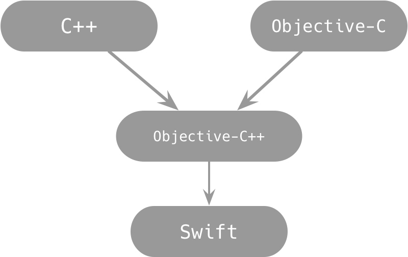
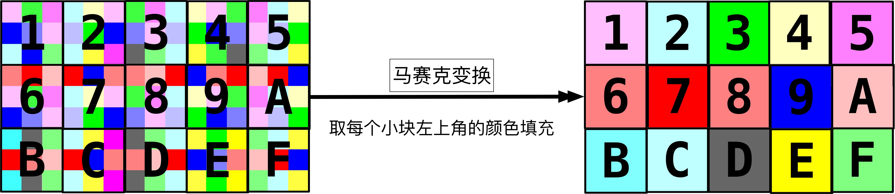
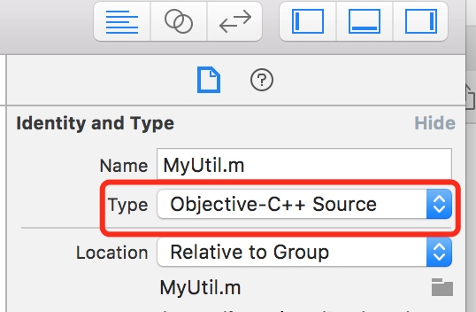
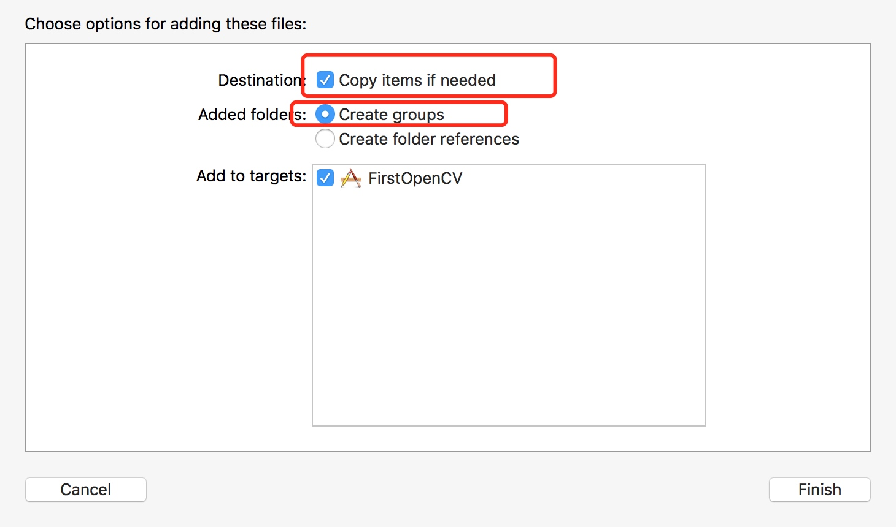
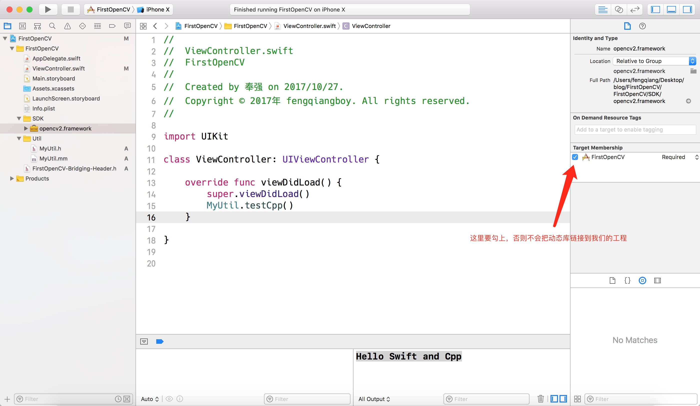
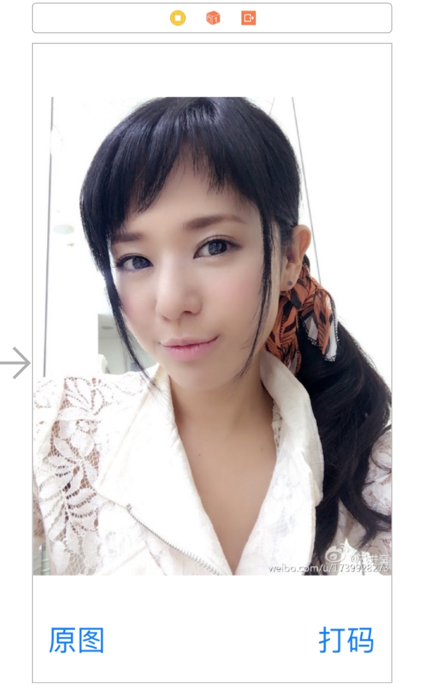

苍老师的 "码" 是怎么打上的
--OpenCV初体验，Swift和C++混编
文档更新说明
- 2017年10月27日 v1.0 初稿
- 2017年10月28日 v1.1 添加Objective-C++编译方法
提到OpenCV，相信大多数人都听说过，应用领域非常广泛，使用
C++开发，天生具有跨平台的优势，我们学习一次，就可以在各个平台使用，这个还是很具有诱惑力的
本文主要记录我第一次使用OpenCV，在iOS开发平台上面搭建开发环境，并且实现一个简单的马赛克功能
开发环境：Swift4、XCode 9.0
1、什么是OpenCV？
- 由英特尔公司于1999年发起并参与开发，至今已有18年历史
- OpenCV的全称是Open Source Computer Vision Library
- 是一个跨平台的开源计算机视觉库，可用于开发实时的图像处理、计算机视觉以及模式识别程序。
- 支持
C/C++、Java、Python、OC、Swift、Ruby等等语言 - 支持
Windows、Android、Maemo、FreeBSD、OpenBSD、iOS、Linux和Mac OS
2、难点，思路
- 由于我们使用的是
Swift，由于目前还不能在Swift中使用C++的类，所以我们得想一个方法，在Swift中调用C++的类 - 其实方法很简单，
Swift天生具有跟Objective-C++混编的能力，而Objective-C++里面是可以直接使用C++的类的，上面的问题也就解决了

3、马赛克原理
- 其实把图片的像素密度调低，就可以出现马赛克效果了
- 开始做马赛克之前，需要定一个马赛克的级别，表示原图中每几个像素变成新图里面的一个像素
- 取一小块区域左上角的一个像素，并把这个像素填充到整个小区域内
- 如下图，左边是原图，右边是经过变换之后的图，假设马赛克级别为3，每个数字表示的区域就是处理的一个小单元，取这个最小单元左上角的颜色，填充整个小单元就OK了

4、开动工程
4.1、搭建c++和swift混编环境
我们首先要搭建一个c++的环境，然后才能进行c++的开发，而c++环境可以通过
iostream里面的cout函数验证
- 首先，我们使用
xCode新建一个swift的iOS项目 - 在工程内，新建一个
Objective-C类，继承NSObject，这里会自动提示我们是否为项目添加桥接文件，选择添加即可（桥接文件是用来向Swift暴露Objective-C方法的） 因为我们要使用
Objective-C++，而把Objective-C转成Objective-C++的方法有两种- 把
.m文件的后缀名改为.mm，xCode就会自动识别我们的代码为Objective-C++了（xCode会通过后缀名自动识别源文件类型） 选中要修改的
.m文件，在右边的Type属性修改成：Objective-C++ Source（也可以手动指定源文件类型）
- 把
在刚才的
.mm文件中，添加一个测试方法，在这里测试一下C++环境是否搭建成功#import "MyUtil.h" #import <iostream> // 记得导入iostrem头文件
using namespace std;
@implementation MyUtil
+ (void)testCpp {
cout << "Hello Swift and Cpp" << endl;
}在前面
xCode自动创建的桥接文件中暴露我们的测试方法头文件在
Swift中调用测试方法，控制台输出 "Hello Swift and Cpp" 就正常了import UIKit class ViewController: UIViewController {
override func viewDidLoad() {
super.viewDidLoad()
// 测试方法
MyUtil.testCpp()
}
}
4.3、导入OpenCV动态库
在
iOS开发中导入OpenCV的库其实非常简单，直接拖拽到工程文件就行了
- 首先去
OpenCV的官网下载我们需要的framework，下载地址：https://opencv.org/releases.html，选择最新版本的iOS pack即可 下载下来之后解压，然后拖拽到我们的工程目录，设置如下图
设置我们的工程链接
OpenCV动态库
build一下，确认不会报错
4.4、实现马赛克函数
接下来就是干代码的时候了
首先要在
.m文件中，导入OpenCV的头文件，导入头文件之后代码如下，这里有几个坑要注意：- 不要在
.h文件中去导入OpenCV的相关头文件，否则会报错，错误信息:Core.hpp header must be compiled as C++，看到这个问题，赶紧把头文件移动到.m文件中去 - 还有就是
OpenCV的头文件最好放在#import <UIKit/UIKit.h>之前，否则也会报一个错误:enum { NO, FEATHER, MULTI_BAND }; Expected identifier
//导入OpenCV框架 最好放在Foundation.h UIKit.h之前 //核心头文件
#import <opencv2/opencv.hpp>
//对iOS支持
#import <opencv2/imgcodecs/ios.h>
//导入矩阵帮助类
#import <opencv2/highgui.hpp>
#import <opencv2/core/types.hpp>
#import "MyUtil.h"
#import <iostream>
using namespace std;
using namespace cv;- 不要在
实现马赛克函数
+(UIImage*)opencvImage:(UIImage*)image level:(int)level{ //实现功能
//第一步：将iOS图片->OpenCV图片(Mat矩阵)
Mat mat_image_src;
UIImageToMat(image, mat_image_src);
//第二步：确定宽高
int width = mat_image_src.cols;
int height = mat_image_src.rows;
//在OpenCV里面，必须要先把ARGB的颜色空间转换成RGB的，否则处理会失败（官方例程里面，每次处理都会有这个操作）
//ARGB->RGB
Mat mat_image_dst;
cvtColor(mat_image_src, mat_image_dst, CV_RGBA2RGB, 3);
//为了不影响原始图片，克隆一张保存
Mat mat_image_clone = mat_image_dst.clone();
//第三步：马赛克处理
int xMax = width - level;
int yMax = height - level;
for (int y = 0; y <= yMax; y += level) {
for (int x = 0; x <= xMax; x += level) {
//让整个矩形区域颜色值保持一致
//mat_image_clone.at<Vec3b>(i, j)->像素点（颜色值组成->多个）->ARGB->数组
//mat_image_clone.at<Vec3b>(i, j)[0]->R值
//mat_image_clone.at<Vec3b>(i, j)[1]->G值
//mat_image_clone.at<Vec3b>(i, j)[2]->B值
Scalar scalar = Scalar(
mat_image_clone.at<Vec3b>(y, x)[0],
mat_image_clone.at<Vec3b>(y, x)[1],
mat_image_clone.at<Vec3b>(y, x)[2]);
//取出要处理的矩形区域
Rect2i mosaicRect = Rect2i(x, y, level, level);
Mat roi = mat_image_dst(mosaicRect);
//将前面处理的小区域拷贝到要处理的区域
//CV_8UC3的含义
//CV_:表示框架命名空间
//8表示：32位色->ARGB->8位 = 1字节 -> 4个字节
//U: 无符号类型
//C分析：char类型
//3表示：3个通道->RGB
Mat roiCopy = Mat(mosaicRect.size(), CV_8UC3, scalar);
roiCopy.copyTo(roi);
}
}
//第四步：将OpenCV图片->iOS图片
return MatToUIImage(mat_image_dst);
}
4.5、在swift中调用马赛克函数
函数已经实现了，接下来就是在
Swift中调用了
为了便于测试，我们在
storyboard中搭一个简单的界面，在按钮中切换马赛克图片和原图，界面如下:
在按钮点击事件中调用上面的马赛克函数即可
@IBOutlet weak var imageView: UIImageView! /// 显示原图按钮
@IBAction func origImageBtnClick(_ sender: Any) {
imageView.image = UIImage(named: "pic.jpg")
}
/// 显示马赛克图片
@IBAction func mosaicImageBtnClick(_ sender: Any) {
guard let origImage = imageView.image else {
return
}
let mosaicImage = MyUtil.opencvImage(origImage, level: 20)
imageView.image = mosaicImage
}效果如下，左边的是原图，右边的是马赛克之后的图片，就这样，苍老师的码就打上去啦~


5、后记
对于C++，很多人并不陌生，不过我想对于iOS开发者来说，用过C++的童鞋并不多吧，我一直很崇拜那些C++大神，因为通过C++，我们可以很方便的实现跨平台开发，就我们今天的马赛克代码来说，移植到安卓平台，里面的东西也只需要做很小部分的修改，就可以非常完美的适配(当然，安卓的开发环境么有iOS这么简单)，所以，掌握和使用C++的性价比还是很高的。
完整代码已经上传到github: https://github.com/fengqiangboy/FirstOpenCV，不过移除了OpenCV.framework，因为太多传不上去，欢迎大家给Star